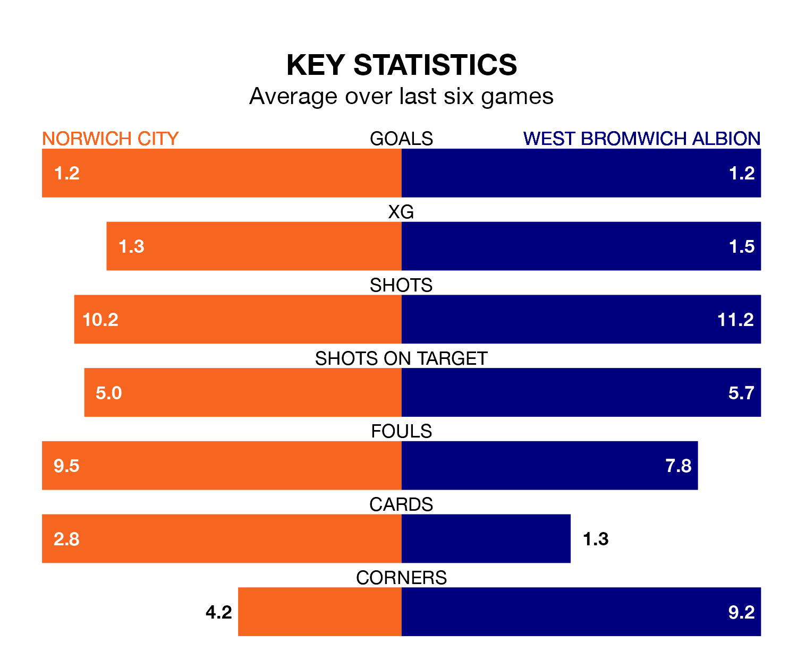

West Bromwich Albion travel to Norwich City on Saturday in EFL Championship.
The visitors come into the game on the back of a win in their last match, having beaten Blackburn Rovers 4-1 at home, with two goals from Brandon Thomas-Asante, one from Dominic Hyam and one from Tom Fellows.
The Canaries also won their last match, 2-1 against Hull City, with their goals scored by Christian Fassnacht and Jon Rowe.
In Alex Palmer, West Bromwich can rely on one of the league's safest pair of hands. He has kept 12 clean sheets in his 27 appearances this season, and no 'keeper has prevented the opposition scoring more often in EFL Championship.
In Norwich's net, Angus Gunn has five clean sheets in 21 games. He has conceded a goal every 80 minutes, 30% more often than the 106 minutes between goals for Palmer.
With 44 goals in 27 games so far this season, City are scoring more than average in the league with 1.6 goals per game. But they are conceding more than average too, letting in 43 goals at a rate of 1.6 per game.
Albion are also above average scorers, with 1.5 goals per game, compared to a league average of 1.4. They have conceded 0.9 goals per game.
In the last 10 years, Norwich and West Bromwich have played each other on nine occasions. Norwich won two of them, West Bromwich five, and they drew twice.
On average, the Canaries scored 1.1 goals and the Baggies 1.2 in those matches.
Their last meeting was on December 26, when West Bromwich won 1-0 at home.
The Baggies are fifth in the table after 27 games, of which they have won 13 and drawn six, earning 45 points.
The Canaries are six places behind the away side in 11th, with 11 wins and five draws putting them on 38 points.
The hosts are in mixed form in EFL Championship, with two wins and two draws from their last six games.
With three wins and a draw over that period, West Bromwich's form is slightly better – they have taken 10 points from 18, compared to Norwich's eight.
Updated: 13:09 (UTC), 17/01/24